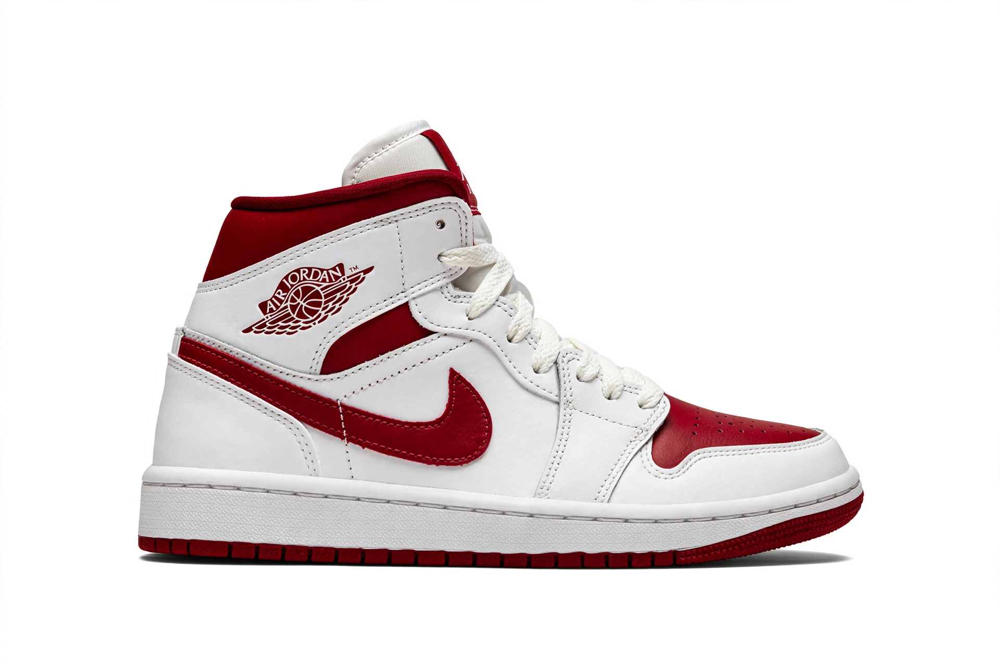

Nike, Inc.

Image: the Nike Swoosh logo and an Air Jordan sneaker in profile on a white background | |
| Type | Public |
|---|---|
| Industry | Apparel, sporting goods |
| Founded | January 25, 1964 (as Blue Ribbon Sports) |
| Founders | Bill Bowerman and Phil Knight |
| Headquarters | Beaverton, Oregon, U.S. |
| Products | Athletic footwear and apparel, equipment, accessories |
| Brands | Nike, Jordan Brand, Converse |
| Revenue | ~US$51 billion (approx., fiscal 2023) |
| Employees | ~84,000 (approx.) |
| Website | nike.com |
Nike, Inc. is an American multinational corporation headquartered near Beaverton, Oregon. It is the world's largest supplier of athletic shoes and apparel and a major manufacturer of sports equipment, named after Nike, the Greek goddess of victory.
History
The company was founded in 1964 as Blue Ribbon Sports by Bill Bowerman, a University of Oregon track coach, and his former athlete Phil Knight, initially distributing Onitsuka Tiger running shoes from Japan. It launched its own line in 1971 under the Nike name, with the Swoosh logo designed by Carolyn Davidson for $35. The waffle-iron-inspired outsole and the 1980s signing of Michael Jordan — whose Air Jordan line became a cultural phenomenon — propelled Nike to global dominance. "Just Do It" debuted in 1988.
Products and marketing
Nike designs and markets footwear, apparel and equipment across running, basketball, football (soccer), training and more, with landmark lines including Air Max, Air Force 1 and Flyknit. Its marketing relies on endorsements by elite athletes and teams, and the owned Converse brand. Sneaker culture and limited "drops" have made some Nike shoes collectible commodities.
Controversies
Nike faced sustained criticism in the 1990s over labour conditions in overseas contract factories ("sweatshops"), leading to monitoring and codes of conduct; it has also faced campaigns over endorsement politics and environmental impact.
See also
Adidas · Phil Knight · Air Jordan · Swoosh